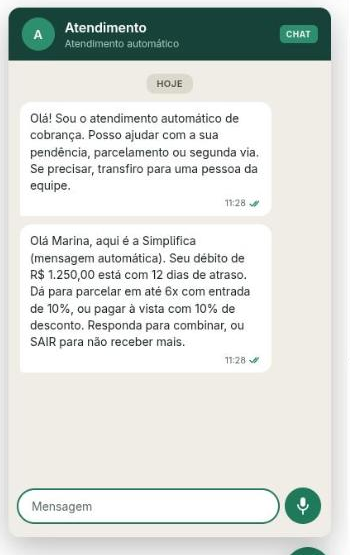
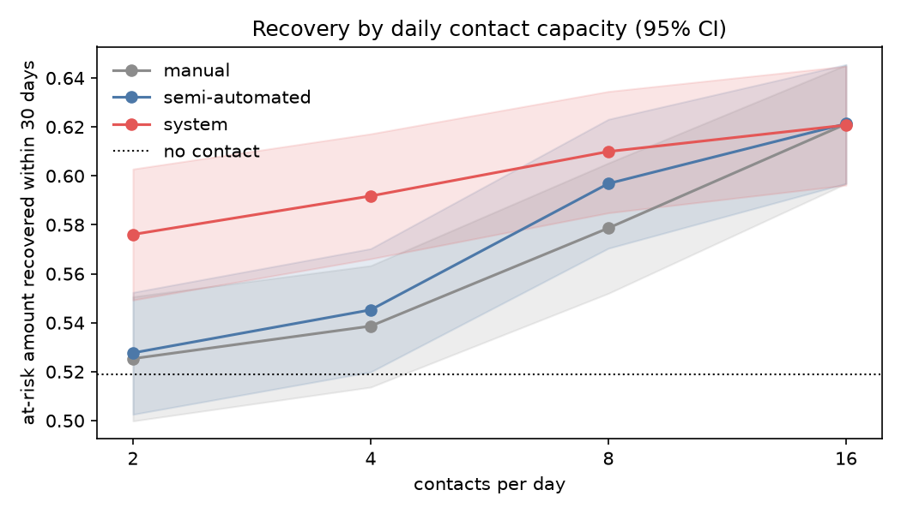

O que foi construído, o que foi medido — e o que ficou em aberto.
PreditivoRAGAgentesRegras legaisChatVoz
AutorGabriel Forster Rocha
InstituiçãoCatólica de Santa Catarina
Data03/12/2026
01 · O problema
Muito crédito para recuperar, pouca capacidade de cobrar.
R$ 213 biem dívidas de empresas no fim de 2025
8,9 mide empresas inadimplentes (CNPJ)
Priorização por intuição, canais fragmentados, custo alto por contato.
E a cobrança tem regras: horário, frequência, opt-out, LGPD, superendividamento.
Fonte: Serasa Experian — Indicador de Inadimplência das Empresas, dez/2025.
02 · Pergunta de pesquisa
Um sistema multiagente — LLM com RAG, agentes proativos e ML preditivo — aumenta a eficiência da recuperação de crédito frente à cobrança manual e semiautomatizada?
Resposta curtaSim — na medida da escassez de contato
OndeEm simulação, não em operação real
03 · O que foi construído
Um orquestrador, três agentes, dois canais.
04 · Dados
Não existe base pública de cobrança. Isso mudou o projeto.
Decisão D1 — dados públicos agora, ERP em paraleloNenhuma base pública liga recebíveis aos contatos de cobrança feitos sobre eles. O acesso ao ERP não foi obtido.
Gerador sintético para o pipeline e os modelosVerifica o protocolo de treino — não descreve comportamento real de pagamento.
UCI Bank Marketing — 41.188 contatos reaisTelemarketing bancário: o único comportamento humano real do trabalho.
LGPD por construçãoIdentificadores suprimidos, pseudônimo HMAC-SHA256 com chave por tenant, quase-identificadores generalizados.
05 · Módulo preditivo
dados sintéticos · verifica o protocolo
Acurácia era a métrica errada.
Tarefa / modelo
PM
AUC
F1
Acur.
1 · XGBoost (scale_pos_weight)
0,860
0,746
0,818
0,709
1 · classe majoritária
0,692
0,500
—
0,692
2 · Random Forest (pesos)
0,414
0,818
0,495
0,762
2 · classe majoritária
0,165
0,500
—
0,836
Tarefa 2 (inadimplência futura): o campeão tem acurácia menor que a classe majoritária e é o único útil — PM × 2,5 e 71% dos inadimplentes recuperados.
Seleção por precisão média; validação TimeSeriesSplit, split cronológico 70/15/15.
PM = precisão média. Teste avaliado uma única vez. Fonte: docs/model-synthetic-*.md.
06 · Estratégia de contato
A resposta cai 58% em seis tentativas.
Tentativa
1
2
3
4
5
6+
Contatos
17.642
10.570
5.341
2.651
1.599
3.385
Resposta
13,0%
11,5%
10,8%
9,4%
7,5%
5,5%
Daí o motor de regras: no máximo 4 tentativas e 48 h entre elas — números derivados, não chutados. Janela de horário avaliada em America/Sao_Paulo, nunca em UTC.
UCI Bank Marketing, 41.188 contatos. Telemarketing bancário, não cobrança.
07 · Agente responsivo
Responder com citação — ou passar para uma pessoa.
0,913acurácia de intenção (23 mensagens)
1,0revocação@5 do TF-IDF
O embedder neural não superou o TF-IDF (MRR 0,804 contra 0,821).
Contexto de conversa: concatenar piorou (0,889 → 0,778); consultas intercaladas melhoraram os acompanhamentos (0,733 → 0,800).
Sem evidência, o agente escala; o operador assume e resolve.
08 · Agente proativo e conformidade
Conformidade como propriedade verificável, não como prompt.
Opt-out antes dos agentesVerificado no agendamento e de novo na entrega.
Horário, frequência, cooldownMotor de regras com os parâmetros da Bank Marketing.
Checador com 5 verificaçõesValores inventados, alçada, 3 divulgações obrigatórias, tom, tamanho.
O achado do SMSUm template por faixa: 18/20. As 2 falhas eram SMS de ~250 caracteres. Por (faixa, canal): 20/20.
Uma restrição legal virou consequência de produto: no SMS, o que cai primeiro é a saudação pelo nome — as divulgações obrigatórias não são negociáveis.
09 · Mudança de escopo
Sem WhatsApp nem telefonia: o mesmo contrato, outros canais.
Por quê: conta comercial, aprovação de templates e cobrança — nenhuma decisão nova para os agentes.
No lugar: canal de chat simulado (widget) e chamada de voz por WebRTC, autohospedada.
O que se mantém: um contrato de canal; nenhum agente importa um canal (teste de AST).
O que se perde: "entregue" e "lida" vêm do navegador, não da operadora; não há métrica de alcance de campanha.

10 · Voz · erro de reconhecimento
A intenção sobrevive ao erro. O valor, não.
WER
Intenção concorda
Valores intactos
0,000
1,000
1,000
0,046
0,967
0,958
0,068
0,956
0,908
0,099
0,856
0,867
0,151
0,833
0,750
A WER 0,099 — uma transcrição que se lê bem — um valor falado em sete já está errado, e nada adiante percebe.
"mil duzentos e cinquenta" → "meu duzentos e cinquenta".
Por isso todo valor ouvido é lido de volta antes de virar ação. Um limiar de confiança não pegaria: o valor se corrompe com o reconhecedor ainda confiante.
18 notas de voz rotuladas, 5 sorteios por mensagem e taxa; modelo de erro pt-BR determinístico.
11 · Chamada em tempo real
2,2 s por turno — e uma resposta longa demais.
Etapa (ms)
Mediana
p90
Espera de fim de turno
700
700
Whisper small, local
1.247
1.939
Agente
46
66
Piper, primeiro áudio
91
119
Medido por WebRTC
2.184
2.934
LiveKit autohospedado; Whisper e Piper locais (LGPD: a resposta lê a dívida de uma pessoa).
Aviso de gravação antes de tudo; fala durante ele é descartada.
SDK de baixo nível, não LiveKit Agents: preserva a escalação por confiança e a leitura de valores.
A resposta do template, falada, dura em mediana 102 s. A chamada pode ser demonstrada, mas ainda não usada.
18 falas sintetizadas numa sala LiveKit real, Ryzen 7 5700X3D só CPU, respondedor de template, 06/11/2026.
12 · Experimento contra os baselines
A predição só rende quando o contato é escasso.

Simulação: 30 replicações pareadas por semente, 1.500 execuções, IC 95% bootstrap. Resposta ao contato: curva da Bank Marketing.
12 · Experimento · números
+4,8 p.p. a custo menor — e o ganho vem da ordem.
Contatos/dia
Sist. − semi
Sist. − manual
2
+4,8 [3,9; 5,8]
+5,1 [4,1; 6,1]
4
+4,7 [4,0; 5,4]
+5,3 [4,6; 6,1]
8
+1,3 [0,6; 2,0]
+3,1 [2,3; 4,0]
16
−0,1 [−0,2; 0,2]
−0,0 [−0,2; 0,2]
Lembretes preventivos: +0,0 a +0,1 p.p. — a ordenação faz o trabalho.
Custo por R$ 1.000 recuperados (4/dia): R$ 34,62 manual, R$ 6,37 semi, R$ 1,94 sistema.
Em 90 dias, todos recuperam o mesmo: contato muda quando se paga, não se.
Zero violações de conformidade em 1.500 execuções.
Pontos percentuais do valor em risco recuperado em 30 dias; média e IC 95%. docs/experiment-results.md.
13 · Braço gerativo
qwen2.5:3b local, CPU · um piso, não um teto
Um modelo pequeno mostra para que serve o checador.
Respondedor
Evidência
Fiel
p95
template
0,875
1,000
2 ms
qwen2.5:3b
0,813
0,692
11,1 s
Ofereceu "até 12 vezes" para 45 dias de atraso — a checagem de números pegou.
Mensagens: variedade 0,307 → 0,672, mas só 11 de 20 conformes; "último aviso" para fatura não vencida.
Defeito real achado: NAO_SEI Fonte: (…) contava como resposta — o cliente leria o token cru.
Sem chave de provedor hospedado; medido em 06/11/2026 com Ollama. Trocar de modelo é configuração, não código.
784testes, incluindo os três fluxos de ponta a ponta
0erros de 1 a 400 conversas simultâneas
Nunca tinham rodado: os parsers de PDF e DOCX, e os clientes reais do Whisper e da Anthropic.
Concorrência: p95 de 0,32 s com 100 conversas e 1,34 s com 400 — um processo, em memória, sem LLM no turno.
15 · Limitações
O que este trabalho não mostra.
Sem dados operacionais reais. Modelos treinados em dados sintéticos; Home Credit não obtida.
O experimento mede o simulador. Afirmo direção e dependência da capacidade, não magnitudes.
LLM só com um modelo local de 3B. Modelo hospedado não medido.
Concorrência sem LLM e em um único processo.
Canais simulados. Sem WhatsApp, sem operadora, sem alcance de campanha.
Voz reduzida. Sem barge-in, sem SIP; microfone real não verificado.
Conjuntos pequenos (13 a 23 itens): direção, não magnitude.
Checagem léxica de tom: não lê ameaça construída sem vocabulário proibido.
16 · Conclusão
A predição melhora a recuperação na medida da escassez da operação — sob o modelo de resposta declarado. A automação sozinha reduz custo; a voz é viável, ainda não útil.
Escassez (2–4/dia)+4,8 p.p. · custo menor
Capacidade folgadaempate
Conformidade0 violações
17 · Trabalhos futuros
Próximos passos — e obrigado.
Dados reais: Home Credit e, sobretudo, um ERP.
Modelar a resposta ao contato (uplift), não só o risco.
Medir o braço LLM com um modelo hospedado — inclusive na voz.
Adaptador real de mensageria e tronco SIP, sem tocar nos agentes.
Barge-in e fim de turno aprendido na chamada.
Checador que confere o estado da dívida afirmado na mensagem.
Julgamento humano de uma amostra das respostas.
Experimento operacional com tentativas e intervalo variados.
Obrigado. · Gabriel Forster Rocha — Católica de Santa Catarina · github.com/gabrielforster/tcc